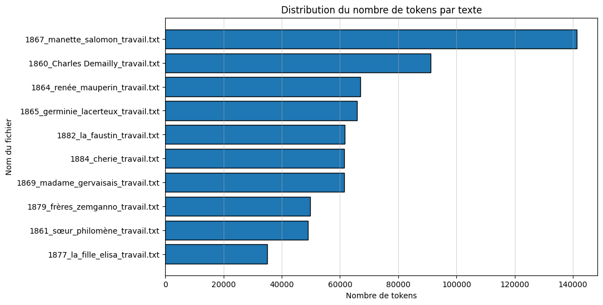
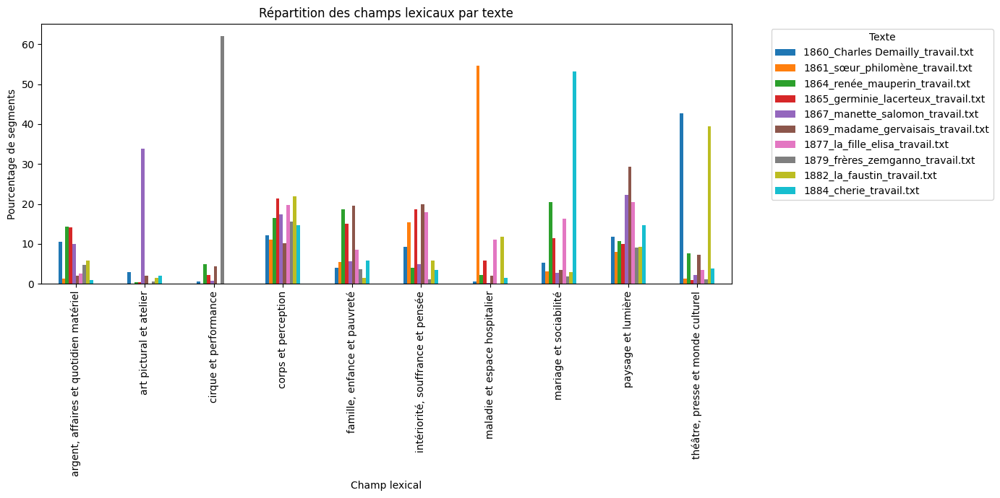

Objectif
Ce travail visait à repérer les grands champs lexicaux qui structurent un corpus de dix romans des frères Goncourt. Après plusieurs essais méthodologiques, j’ai retenu une approche fondée sur la segmentation du corpus, le prétraitement linguistique avec spaCy, une vectorisation TF-IDF et une modélisation thématique par NMF.
Corpus étudié
- Charles Demailly (1860)
- Sœur Philomène (1861)
- Renée Mauperin (1864)
- Germinie Lacerteux (1865)
- Manette Salomon (1867)
- Madame Gervaisais (1869)
- La Fille Élisa (1877)
- Les Frères Zemganno (1879)
- La Faustin (1882)
- Chérie (1884)
Méthode
Prétraitement
Segmentation en unités de 300 mots, lemmatisation avec spaCy, suppression des mots-outils,
de la ponctuation et des chiffres, puis conservation principale des noms et des adjectifs.
Modélisation
Vectorisation par matrice TF-IDF avec min_df = 5 et max_df = 0.8, puis comparaison
entre NMF, LDA et BERTopic. Le modèle NMF à 10 topics a produit les résultats les plus cohérents.
Visualisations


Champs lexicaux retenus
| Topic | Champ lexical |
|---|---|
| 1 | Intériorité, souffrance et pensée |
| 2 | Paysage et lumière |
| 3 | Maladie et espace hospitalier |
| 4 | Famille, enfance et pauvreté |
| 5 | Argent, affaires et quotidien matériel |
| 6 | Cirque et performance |
| 7 | Mariage et sociabilité |
| 8 | Corps et perception |
| 9 | Art pictural et atelier |
| 10 | Théâtre, presse et monde culturel |
Résultats
Les champs les plus représentés dans le corpus sont corps et perception, paysage et lumière, théâtre, presse et monde culturel et mariage et sociabilité. La répartition par œuvre montre à la fois des régularités transversales et des spécialisations plus marquées selon les romans.
L’ensemble obtenu est compatible avec une lecture naturaliste du corpus : le corps, les milieux, les conditions matérielles, les espaces sociaux et la souffrance occupent une place importante dans les résultats.
Limites
Cette analyse reste exploratoire. Les topics extraits correspondent à des regroupements lexicaux statistiquement récurrents, et non à des thèmes littéraires au sens strict. Leur interprétation suppose donc un retour constant aux segments et aux œuvres elles-mêmes.